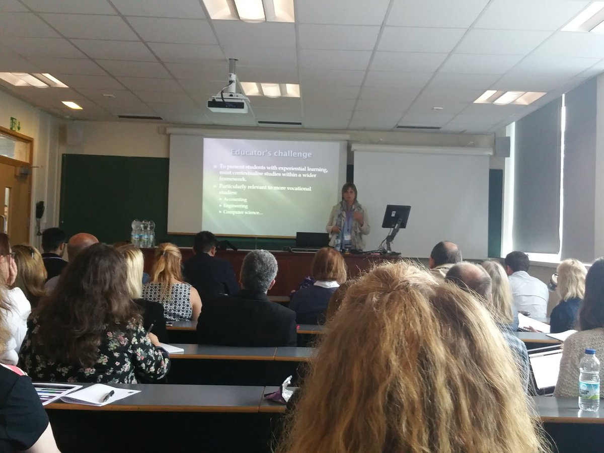
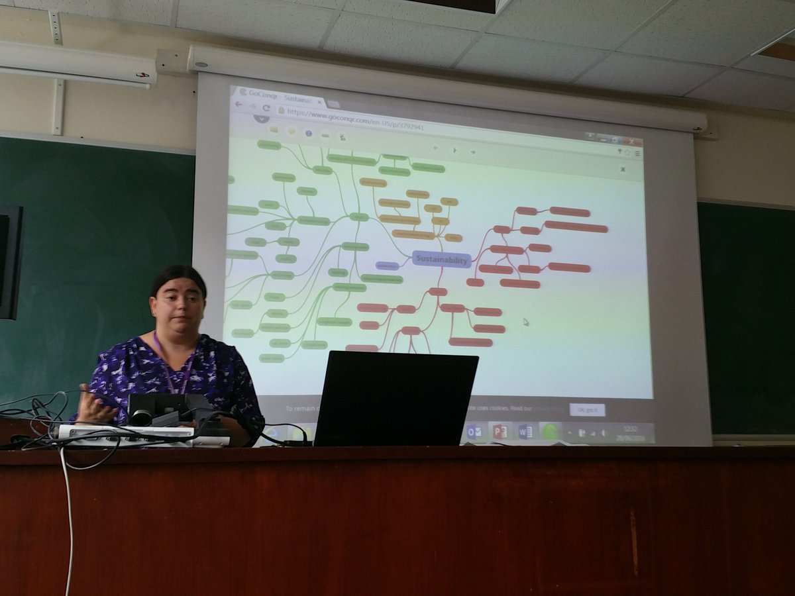
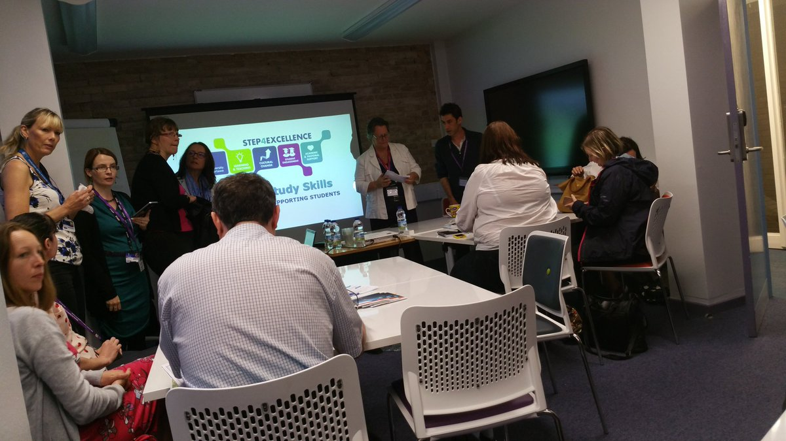
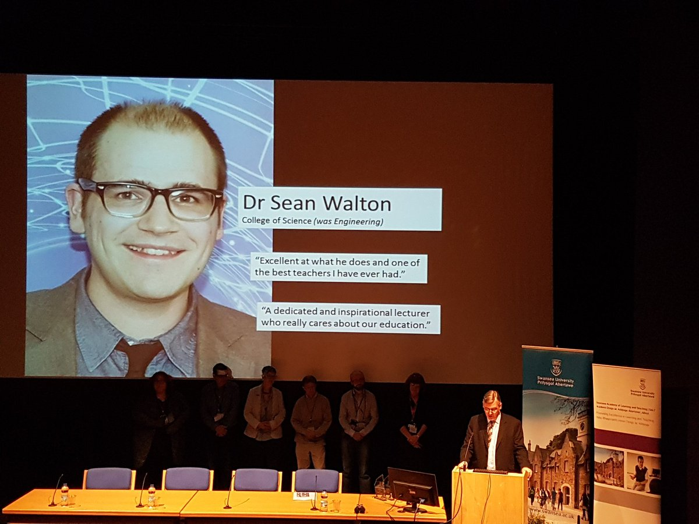
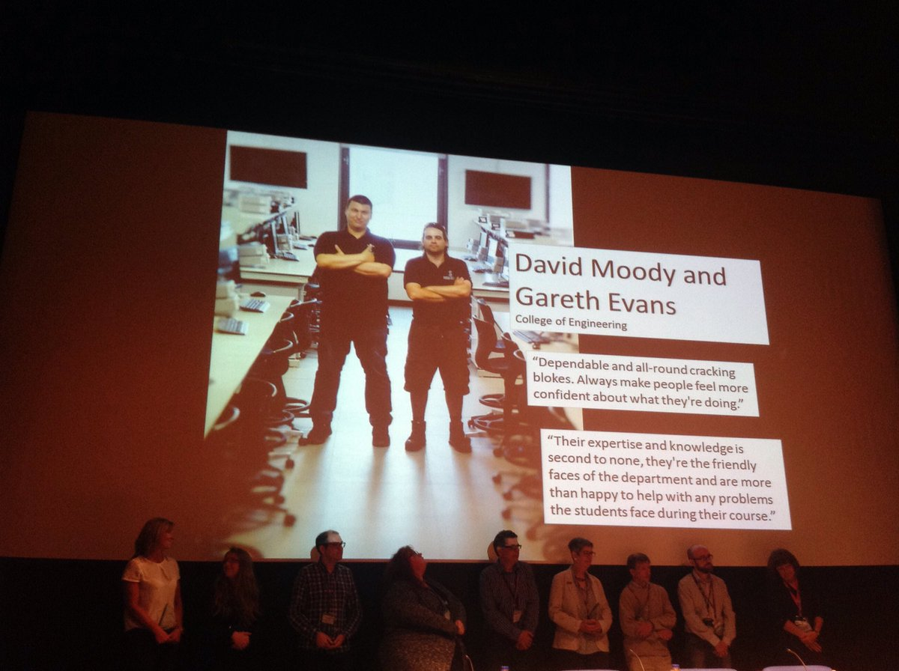

Edit
Swansea University SALT Conference 2016
Tweets from the annual conference of the Swansea Academy of Learning and Teaching (#SUSALT16)
- #SUSALT16The 8th Annual SALT Learning and Teaching Conference 'Inspiring Teaching, Engaging Students, Enhancing Assessment' will take place on Tuesday 28th June 2016 at the Taliesin Arts Centre, Singleton Campus, Swansea University. We have a diverse range of sessions including presentations, workshops, lightning talks and poster sessions.
- abstract accepted for #SUSALT16 last time I presented at a teaching conference was during my PGCE 10 years ago - anyone else going?
- Putting our #susalt16 workshop together. Can't wait to chat employability! @SwanseaUniSEA @SwanseaUni @susaltteam @RebeccaVaugha15
- They're actually going to let me talk at "#SUSALT16 Conference". See you there? http://www.eventbrite.com/e/susalt16-conference-registration-25511004100?aff=estw via @EventbriteUK
- I'm going to "#SUSALT16 Conference". See you there? http://www.eventbrite.com/e/susalt16-conference-registration-25511004100?aff=estw via @EventbriteUK
- Hurrah! Managed to swap a day so I can go to the whole of #susalt16 Doing a poster too with @philippaprice and @BernieMathias
- Even catwoman herself is coming to #susalt16 on the 28 June 2016 @mandyjjack @susaltteam #shamelessplug pic.twitter.com/T2zXEeDJRb
- The Legal High team! Well done all! pic.twitter.com/RyYDLjf80m
- I'm going to "#SUSALT16 Conference". See you there? http://www.eventbrite.com/e/susalt16-conference-registration-25511004100?aff=estw via @EventbriteUK
 Working hard to finalise our jam packed programme for #susalt16 ... Only 6 days to go now ! pic.twitter.com/1ru7pW77Qz
Working hard to finalise our jam packed programme for #susalt16 ... Only 6 days to go now ! pic.twitter.com/1ru7pW77Qz- Our #susalt16 workshop is ready to go! Looking forward to chatting employability and new ideas! @SwanseaUniSEA @susaltteam
- Our #susalt16 workshop is ready to go! Looking forward to chatting employability and new ideas! @SwanseaUniSEA @susaltteam
- #susalt16 have had a sneak peek at some of the posters for Tuesdays SALT conference. Its going to be exciting stuff! #SUSALTTeam @susaltteam
- All hands on deck at @susaltteam ready for the #SUSALT16 conference tomorrow!
- Looking forward to #SUSALT16 2moro @SwanseaUni - will be nice to spend the day at old haunts on Singleton Campus #TeachingAndLearning
- Gutted to miss #SUSALT16 Conference tomorrow - but my poster (CP13 #SPIT) will be there: https://padlet.com/Debbaff/SUSALT16Posters @swanscience
- Looking forward to #SUSALT16 on 28/6/16 ? Join us for a quick tweet chat on Monday evening at 8pm ... (27/6/16) pic.twitter.com/e32jBgygBu
- @EmmaLSlade not to worry, there are a couple of us online #susalt16
- I'll be tweeting as @susaltteam for next 15 mins :) Join me & some of the team if you are around and are coming to #SUSALT16 tomorrow !
- #SUSALT16 there are so many exicting sessions. check out the programme http://bit.ly/295FHOq
- Looking forward to sharing the day tomorrow with some of these folks #susalt16 @sarahanntait @HelenMD @DrSeanWalton @LMasonSU
- Sorry that @cpjobling wont be able to attend this year #SUSALT16 in person .. we will be thinking of you
- @susaltteam I won't be able to attend much virtually either ... But thanks for remembering me! #susalt16
- #SUSALT16 Definitely - mindmapping and storyboarding can help when planning a module, presentation, HEA Fellowship.. https://twitter.com/HelenMD/status/747507207047122947
- Don't forget we are introducing the concept of #openbadges at #SUSALT16 #deblovesbadges if you want to know more ask @debbaff
- Thanks to all the participants in our small impromptu chat. See you bright and early for #SUSALT16 in the morning ! https://saltconference2016.wordpress.com/
- #SUSALT16 I got an #openbadge for the Exploerer Course this year. Great way of evidencing reflection. Ask @debbaff https://twitter.com/susaltteam/status/747508073539854336
- Lots of good posters here, including one from me, @rscsam and @BernieMathias #SUSALT16 https://twitter.com/InesFuertbauer/status/747500062134042628
- @lappinscott busy day for you with speaking at #susalt16 too
- Not able to come to #susalt16 tomorrow? Our posters are on PADLET https://padlet.com/Debbaff/SUSALT16Posters
- #SUSALT16 If HEA Fellowship (any category), sparks your interest, come see me at tomorrow's conference #SUSALTHEA
- Our Keynotes will be live streamed if anyone is not able to come to #susalt16: http://bit.ly/2900B3j
- Early start and Heading off for #susalt16 see you there ! pic.twitter.com/NDyZs9aPKp
- Arrived and registered at #susalt16 Looking forward to seeing old and new faces, and sharing best practice #TeachingAndLearning @susaltteam
- #SUSALT16 excitement building at the start of our learning & teaching conference, lots to discover pic.twitter.com/lzbGysvdSF
- Learning about multi-field approaches with physical and mental health, see #susalt16 posters pic.twitter.com/jOncQI5JTo
- Tips for using simulation in nursing programs, see #susalt16 posters pic.twitter.com/ayeFfmYmMD
- Great representation from @HumanandHealth at #SUSALT16 -well done everybody pic.twitter.com/w0UpIHPpql
- I do love me a good conference in the mornin' @TaliesinSwansea @swanscience @SwanseaUni @SwanseaUnion #SUSALT16 pic.twitter.com/iTvcXgVdP8
- Looking forward to the Swansea University SALT conference - waiting for the keynote Prof Martin Weller OU #susalt16 pic.twitter.com/MTkVnD66jH
- Ready for the #susalt16 conference! Exciting day of learning ahead! @SwanseaUniSEA @susaltteam pic.twitter.com/lLCNOAK4vi
- Fabulous to see posters from more recent members of team @DeptofNursingSw @HumanandHealth #welldone #SUSALT16 pic.twitter.com/SBeRfwc0ru
- Ready for the off.... #susalt16 pic.twitter.com/tbufWlcu0V
 #susalt16 Ready to go Swansea Academy of Learning & Teaching Conference pic.twitter.com/86JV2cmLri
#susalt16 Ready to go Swansea Academy of Learning & Teaching Conference pic.twitter.com/86JV2cmLri- #susalt16 is about to start!Teaching&Learning CPD in progress!@SwanSTEMWoMen1 @SwanseaUni pic.twitter.com/9D58ZW0Sw8
- #susalt16 about to start - house is filling up fast! pic.twitter.com/RVJuhKWqWH
- And we're off. #susalt16 pic.twitter.com/0TjKdHRWNk
- Prof Jane Thomas welcomes delegates to #SUSALT16 pic.twitter.com/xlSUitNuV5
- Follow the live stream for 8th Annual SALT Conference #susalt16 https://mrclabsestream.swan.ac.uk/view2.aspx?e=TALIESIN
- First time @SwanseaUni SALT conference, looking forward to an interesting and inspiring day of learning about learning #susalt16
- @lappinscott opens #susalt16 and encourages us to tweet all the exciting stuff we hear today pic.twitter.com/aSPLzFHO33
- #SUSALT16 @lappinscott sharing Senior Management commitment to teaching and importance of link between research and teaching
- Looking forward to the day ahead at #SUSALT16 pic.twitter.com/4FM2sLaKJL
- Edrych mlan am ddiwrnod diddorol cynhadledd dysgu ac addysgu @Prif_Abertawe #susalt16 looking forward to an interesting L&T conference!
- The start of what should be a great day #susalt16 pic.twitter.com/9Q5dC6vaqm
- #SUSALT16 Michael Draper is here pic.twitter.com/JJM08p674L
- Hilary Lappin-Scott opening the #susalt16 conference pic.twitter.com/QE9BZO2sqf
@mweller's keynote
- Yes this is a very important point Louise #susalt16 https://twitter.com/lj_rees/status/747707067146866688
- Yes this is a very important point Louise #susalt16 https://twitter.com/lj_rees/status/747707067146866688
 @lappinscott gives warm welcome to @mweller at #susalt16 thinking about educating next Gen pic.twitter.com/ATgAmFurpz
@lappinscott gives warm welcome to @mweller at #susalt16 thinking about educating next Gen pic.twitter.com/ATgAmFurpz- #SUSALT16 Open license textbook - BC Campus- first year geography for Vancouver field trip? @gerainthowen @JennyDStanford
- @drmichlee should be with you a bit later today all being well :) #susalt16
- Commitment to research-led teaching says @lappinscott #susalt16 would love to be there but my paper was turned down pic.twitter.com/TWdIWLYzFX
- #SUSALT16 open data - sharing can enrich the data bank for your research @NewtonsNeurosci
- Elements of openness #susalt16 pic.twitter.com/sF1MzLWn4S
- .@LesleyHulonce Sorry to hear this Lesley, you'd still be very welcome to attend and contribute. #susalt16
- Epic conference swag a useful phone power bank charger #susalt16 pic.twitter.com/SNIIJrTOfn
- #SUSALT16 Economic model of #openeducationalresources - commission openly funded work rather than student paying for material.
- #SUSALT16 Paying for #openeducationalresources in US has major benefits for students and state budget pic.twitter.com/3o2X8KzWR7
- #SUSALT16The 8th Annual SALT Learning and Teaching Conference 'Inspiring Teaching, Engaging Students, Enhancing Assessment' will take place on Tuesday 28th June 2016 at the Taliesin Arts Centre, Singleton Campus, Swansea University. We have a diverse range of sessions including presentations, workshops, lightning talks and poster sessions.
- The SALT Team also tweet under @susaltteam . Why not follow us for news of upcoming events and lots of tips and resources #susalt16
- @chris_hall Totally going to use my #susalt16 power block to power my @WaldorfGmbH rocket synth on the go.
- #susalt16 @susaltteam hard at work ... check out @HelenMD in action pose with her camera ! pic.twitter.com/1pfUuaEaUG
- Gutted to miss #susalt16 @SwanseaUni! On the train to London instead...
- @SarahSwanSAILS #susalt16 Method in our madness - @susaltteam would like to see you tweeting thoughout the conference
- Participant open badge email should be on its way later today to delegates ! #susalt16 #deblovesbadges pic.twitter.com/NMlW0yDegq
- Eye opening already - going to be a good day #susalt16 @lappinscott
- Eye opening already - going to be a good day #susalt16 @lappinscott
- Really enjoying #susalt16 keynote on openness. At the heart of much of our research support work in ISS http://www.swansea.ac.uk/iss/researchsupport/
- @_simeonsmith I'll put it on the list :) #susalt16
- The benefits of engaging in openness #susalt16 pic.twitter.com/apyEUzsDqM
- 7 Days of Twitter: an open online course running at Swansea Uni this week :0) #susalt16 #su7dot https://su7dot.wordpress.com/
- Obligatory Brexit slide :) #susalt16 pic.twitter.com/lwKy8WOsBN
- Open access and openness relevant to all #susalt16 pic.twitter.com/oV0W2guxXt
- The dark side of open access -how do we ensure quality in openness? #susalt16 Good question
- The 'Brexit slide'. Digital and open scholarship-Martin Weller at SALT conference #susalt16 pic.twitter.com/JlQPdF9kpF
- Network efficiently before, during and after #susalt16! Download @near_pro now, http://www.near.pro #ProfessionalNetworking #app
- Critical appraisal comes in to play. Librarians can help with CA. #susalt16 https://twitter.com/SarahSwanSAILS/status/747720180600553472
- 300+ tweets already and interesting though still largely local network forming around #susalt16: http://bit.ly/susalt16-explore
- #SUSALT16 surreal. able to stand outside Tasliesin and watch keynote inside via live stream. cant be here? follow us http://bit.ly/28Zi2fc
- Sad I can't be there - hope to follow later #susalt16 https://twitter.com/LJ_Rees/status/747721787794923521
- Excellent ideas and discussions so do follow #susalt16 tweets #thanksSALT #loveHE pic.twitter.com/Qxj3Aqewrw
- Transforming the student learning experience...#susalt16 pic.twitter.com/zrAaMs2kJd
- Finding out more about experiential learning! #susalt16 pic.twitter.com/YD12k9AYy0
- #susalthea SALT member @mandyjjack gets Senior Fellowship of HEA today! great news #SUSALT16 pic.twitter.com/sZ2PdpCYOW
- Hope everyone enjoys today's #SUSALT16 - Inspiring Teaching, Enhancing Assessment, Engaging Students @SwanseaUni Thanks to @susaltteam
- Flipped classroom...the lecture becomes more like a workshop. Problem is ensuring students engage at home #susalt16 pic.twitter.com/UN5Smbe88S
- Learning about ensuring professional skills, and developing professional identities #susalt16
- Enjoyed listening to Neil Harris explaining his use of the Flipped Classroom for CELTA #SUSALT16
- WordPress being used for enagging students - under-used resource? I wonder... #susalt16
- Excellent talk on social media count down to joining Swansea psychology. Something chemistry should consider repeating #susalt16
- #susalt16 attendees: Feel free to tweet the team about how we can arrange a placement in your department! https://twitter.com/SwanWorkPlaceme/status/747747566163472384
- New #susalt16 flags looking good! Thanks @reddragonmfg for great service! pic.twitter.com/SdW2joTVCm
- #SUSALT16 Sarah Norris speaking on Cognitive Apprenticeship - mentors critical transmitting tacit knowledge pic.twitter.com/IG1z2OY8ks
- Our new flags looking great for promoting #susalt16 thanks @reddragonmfg brilliant job! https://twitter.com/mandyjjack/status/747750639195815936
- #SUSALT16 Lizzy Tanguay and Pete Hanratty discussing their evidence-based approach for College specific provision. pic.twitter.com/Bv8lVzbIT5
- Mindmaps as good revision aids - wish I'd known this before studying for my APMP! #susalt16 pic.twitter.com/cFeqYpWFAu
- #SUSALT16 what are our student needs? Lizzy discusses research into student needs, what learners need to know pic.twitter.com/ZyIoS7ky9d
- Neil Harris - flipping the classroom, an idea for our @SwanseaUniSEA #employability workshops #susalt16 pic.twitter.com/QGjkV2ylEs
- #SUSALT16 how ASP review their data in consultation with Colleges to determine studet workshop needs pic.twitter.com/5GLlgYVhYH
- @sarahanntait talks about feedback for students at @SwanseaUni #susalt16 we want to improve students experience pic.twitter.com/cIXvEMXM2j
- Love discussing employability ideas! #susalt16 @SwanseaUniSEA @susaltteam @SwanseaUni pic.twitter.com/VHqbbOidHf
 #susalt16 Sarah's talk just about to start. Go wonder woman. pic.twitter.com/hdj4HcJ6fS
#susalt16 Sarah's talk just about to start. Go wonder woman. pic.twitter.com/hdj4HcJ6fS- Have you missed a session? @susaltteam are recording them and will make them available asap #susalt16
- Sea and salt working together = winning combination! Great conference #susalt16 #seayourfuture @SwanseaUni https://twitter.com/jendrewson/status/747758045850107906
- Great being part of the #entrepreneurship workshop #susalt16 @corinaedwards @David230575 @climbingadam pic.twitter.com/Umg4kBVSkQ
- Useful discussions with @LJ_Rees about our #HEA application @SwanseaUni #susalt16 pic.twitter.com/ZsrrP2UA58
- Best. Apple pie. Ever. #susalt16 #AllTheCream #mmmmCreamyGoodnesss #BuffetLyfe #YOBO #YouOnlyBuffetOnce
- Learning lots from @debbaff about open digital badges @SwanseaUni #susalt16 pic.twitter.com/Q8HIAOhseE
- Holding a workshop on academic study skills this afternoon! #susalt16 pic.twitter.com/DnjM8SGEAJ
- Next session for #susalt16 is our workshop on Step4excellence pic.twitter.com/jGQgFzkzQB
- The room is filling up fast! #susalt16 pic.twitter.com/vzws6gwRti
- Using dynamic narratives to facilitate enquiry based learning with @AlysEinion #susalt16
- Group are now disscussing formal audits of students' skills #susalt16 pic.twitter.com/TPHhXZeidv
- Enjoyed a great talk on discussion boards for summative assessment by @drstephbest #susalt16
- Enjoyed a great talk on discussion boards for summative assessment by @drstephbest #susalt16
- If you are interested in employability have a look at this Jisc resource https://www.jisc.ac.uk/rd/projects/developing-student-employability #susalt16
- If you are interested in employability have a look at this Jisc resource https://www.jisc.ac.uk/rd/projects/developing-student-employability #susalt16
- #SUSALT16 @JuliaTerry123 talking about NICE initiatives to drive health improvement. NICE Evidence Search web portal for student learning
- #SUSALT16 @JuliaTerry123 demonstrating her ongoing mentoring skills - being an HEA Senior Fellow
- #SUSALT16 @JuliaTerry123 discusses what we've learnt about delivering differently - applying to the NICE Student Champion scheme
- #susalt16 Susie Moore and Sophie Whitecross presenting on peer assessment pic.twitter.com/SHrKAu11vH
- P(preparation)=1.1 for blended learning session! We brought devices, but no headphones...not a problem. #SUSALT16 pic.twitter.com/EdsQ7v62mR
- In case you missed me at the poster session the excel tutorial videos as learning aids can be found at http://goo.gl/xI3ZaT #susalt16
- So many colleagues passionate about employability #susalt16 @SwanseaUniSEA @susaltteam @SwanseaUni pic.twitter.com/5k3BdDtKl7
- @debjonesccjc @GemMorgan007 showcasing #employability embedded in Criminology - great interactive session #susalt16 pic.twitter.com/GunEDoG2bh
- Interesting thinking about Followership re students & learning https://hbr.org/1988/11/in-praise-of-followers Staff too?! Don't be that sheep! #susalt16
- #susalt16 refreshments before the final keynote and teaching awards pic.twitter.com/I2BCzg5v8Q
- Great to talk about how @CriminologySwan embed #employability within the curriculum with @debjonesccjc #SUSALT16
- #susalt16 all the fab posters can be found on the conference website, some excellent ideas! pic.twitter.com/gxB3zeM4ad
- #susalt16 Keynote is starting..... pic.twitter.com/vz4tST0XHQ
- Final speeches at #susalt16. Who has won some awards though? pic.twitter.com/Mx9FuBTncx
- #SUSALT16 @gerainthowen gets another ELTA...anymore room on his mantepiece? Well done SALT lead for Science @susaltteam
- ETLA awards at #susalt16 pic.twitter.com/4oHgBiTiNw
- Congratulations @gerainthowen for your award in learning & teaching- yay! #susalt16 pic.twitter.com/SJoUAfGCVe
- Well done Michele #susalt16 pic.twitter.com/lU5Op1HpS1
- Director of leaning and teaching for science wins award at Swansea university #susalt16 pic.twitter.com/o7JP53ADwJ
- ...and they keep coming #susalt16 pic.twitter.com/T4YnES7H2m
- Inspiring and enthusiastic #susalt16 pic.twitter.com/Rjp8S4TfEz
- A new lecturer for @swanscience (from @SUEngineering ) and another ELTA winner #susalt16 pic.twitter.com/J7E3ZjJhIV
- Fellow colleague Neil Harman gets #susalt16 award alongside G. Owen @swanscience pic.twitter.com/52FiNiz2wy
- Whoop! Well done Neal #susalt16 https://twitter.com/susaltteam/status/747801716024877056
- ESSA awards for student support #susalt16 pic.twitter.com/XAumlY6DIf
- This year's teaching award winners #susalt16 pic.twitter.com/DPMedMF4aV
- 
- Delighted for @VictoriaLovett recognised for her teaching excellence @HumanandHealth #susalt16 pic.twitter.com/9ow5Trf5As
- Delighted for @VictoriaLovett recognised for her teaching excellence @HumanandHealth #susalt16 pic.twitter.com/9ow5Trf5As
- #susalt16 fab to see how many existing HEA Fellows, mentors and assessors have won ELTAs and ESSAs #susalthea pic.twitter.com/HT96hC8QWh
- Congratulations to all the award winners #susalt16 well done everyone pic.twitter.com/XZg6H6Bg6x
- Today's #susalt16 has been an opportunity to celebrate our HEA Fellows! Congratulations all! pic.twitter.com/aTisEkJtxQ
- @trinahall101 Thank you! Delighted #susalt16
- Huge congrats to @VictoriaLovett for well deserved teaching award #susalt16
- We look like an award police line up. #susalt16 https://twitter.com/susaltteam/status/747803033346650113
- Congratulations to Maria Davis on award - well deserved! #susalt16
- Congrats @dcjmoody, @00flev & Jude Clancy of @SUEngineering on your awards.Sorry I couldn't be there guys #susalt16 https://twitter.com/susaltteam/status/747803033346650113
- PVC Stringer delivering the final keynote #susalt16 , front row = bad vantage point pic.twitter.com/dszrJpxUbq
- Martin Stringer - education about knowing where to find what you need to know. Talking our language #librarians #susalt16
- I love the message that a rewarding life isn't measured by salary #susalt16 https://twitter.com/drmichlee/status/747806580658286592
- Prof Martin Stringer talking real sense #susalt16 pic.twitter.com/hc0I9Yita5
- Professor Martin Stringer suggests the need for critical thinking #susalt16 pic.twitter.com/1bXazYytWc
- There he goes, talking like a librarian again ;-) #susalt16 https://twitter.com/susaltteam/status/747810436809129988
- Look out for the coverage on the Salt website SaltTV #susalt16 https://twitter.com/helenmd/status/747814028903342081
 A very personal keynote speech from PVC Martin Stringer emphasising values to conclude #susalt16 pic.twitter.com/GtooaRfBBW
A very personal keynote speech from PVC Martin Stringer emphasising values to conclude #susalt16 pic.twitter.com/GtooaRfBBW #susalt16 PVC as bee-keeper! pic.twitter.com/MjFiovUu9j
#susalt16 PVC as bee-keeper! pic.twitter.com/MjFiovUu9j- Embedding #employability in the curriculum, the integrated and discrete model adopted by Criminology #susalt16 pic.twitter.com/2mUAaSg45k
- Why yes, yes I did just win an excellence in learning and teaching award. Thanks for asking :) #susalt16 pic.twitter.com/GeQ4saDWWy
- Let me add my congratulations Michele: #susalt16 https://twitter.com/raithbym/status/747805065252118528
 #susalt16 looking rather sheepish but happy pic.twitter.com/nU6t2GGZQ7
#susalt16 looking rather sheepish but happy pic.twitter.com/nU6t2GGZQ7- According to @S_J_Lancaster & @suebecks ( http://bit.ly/4-dim-conference ) a muliplicity of pre and post #susalt16 interactions can now begin.
- Congratulations Maria, CHHS PGR Officer, well deserved SALT Excellence in Student Support winner 2016 #susalt16 pic.twitter.com/KdrwyClkTH
- #susalt16 thirsting for more CPD after today's conference? Join in tomorrow's tweet chat #LTHEchat @susaltteam https://twitter.com/simonrae/status/746102563456565248
- So pleased! Thank you students present and past @swanseageog @SwanseaUni @swanscience #susalt16 pic.twitter.com/8zYIWGXjYS
- Inclusive, creative, outcome focused teaching & learning. Stunning talk by PVC Martin Stringer @SwanseaUni #susalt16 pic.twitter.com/AoBG1Qncj0
- Congrats @susaltteam for organising a fantastic conference today #susalt16. Proud to be a bee in our @SwanseaUni hive @debbaff @HelenMD
- Thanks, @debbaff organised it but we all pulled together as a team #TogetherStronger #susalt16 https://twitter.com/LMasonSU/status/747856094588993537
- Really enjoyed it but quite pleased to be in my pj's after a very long day ... Missed the nice lunch tho #susalt16 pic.twitter.com/wlOMkWiaJD
- So proud to see 5 CAS staff on the HEA fellowship list at SALT conference #SUSALT16 @ASP_Swansea @StudentServsSU pic.twitter.com/ab7ypl02JC
- Great day at the SALT conference @susaltteam - inspiring talks and posters #susalt16
- See you at #susalt17